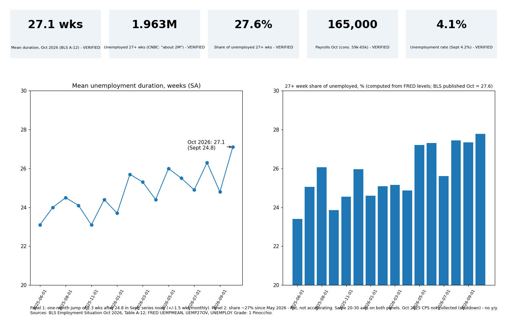

Every checkable number in Alex Harring's CNBC article (6 Nov 2026) matches BLS: mean unemployment duration 27.1 weeks, 1.963 million unemployed 27+ weeks, 27.6% share, payrolls +165,000, unemployment 4.1%. Rating: 1 Pinocchio (mostly accurate; framing needs context).
| Claim | Result | Source |
|---|---|---|
| Mean duration 27.1 wks Oct, SA | True | BLS A-12 |
| Longest ex-pandemic since 2016 | True (judgment) | FRED UEMPMEAN |
| ~2 million unemployed 27+ wks | True (1.963M) | BLS A-12 |
| 27.6% of jobless, highest since late 2021 | True | BLS A-12, FRED |
| Benefits end after 26 weeks | Generally true | Urban Institute via press; DOL |
| Payrolls +165,000, beat forecasts | True (consensus 59k Dow Jones, 65k LSEG/FactSet) | BLS; press |
| Unemployment rate fell to 4.1% | True (4.2% Sept), BLS calls it "little changed" | BLS, FRED UNRATE |
| Layoffs/discharges lowest in over a year | True: JOLTS Sept 1.641M, lowest since Mar 2025 | BLS JOLTS 3 Nov; Reuters |
| Disney and American Express cuts | True (Amex ~5% of workforce; Disney rounds in 2026) | press reports |
| Richmond Fed research | Exists; emphasis overstated | Richmond Fed EB 26-25 |
| Stahle and Renter quotes | Not checkable here | - |
Confidence: high on BLS numbers; medium on Disney/Amex, consensus and 26-week rule (secondary sources); low on quotes.